Teaching
Courses
Courses I designed from scratch, then courses I took over and rebuilt.
Designed from scratch
Courses I built
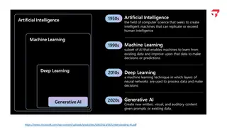
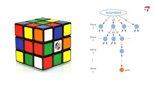
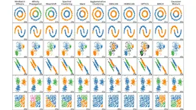
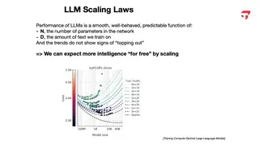
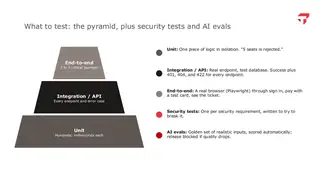
Artificial Intelligence for Business Leaders
Where AI creates value in a business, where it does not, and how to explain the difference to the people paying for it.
course page AI MethodsMBA · Tepper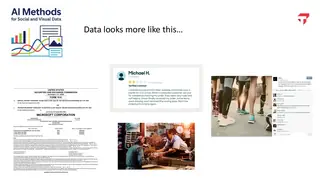
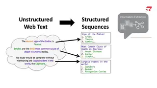
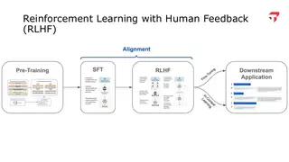
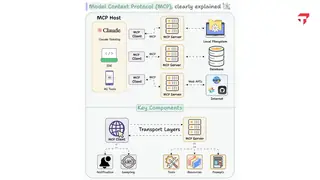
AI Methods for Social and Visual Data
Using AI on text, networks, and images, and knowing when the output is ready for a decision.
course page Tech TalentUndergraduate · Tepper / CMU Qatar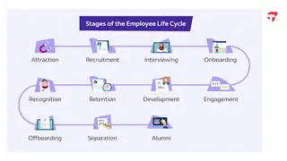
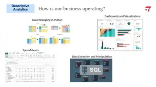
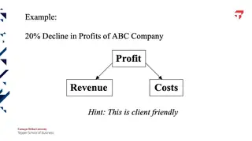
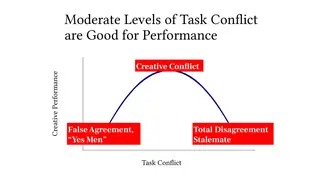
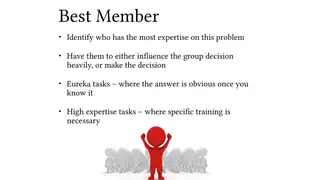
Managing and Assessing Tech Talent and Organizations
How to hire, develop, and evaluate technical people using evidence instead of instinct.
course page Math SkillsMS in Business Analytics · Tepper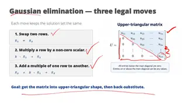
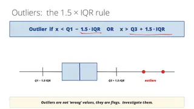
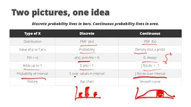
MS in Business Analytics Math Skills Workshop
The math incoming MS in Business Analytics students need before the quantitative core begins.
course pageTaken over and rebuilt
Courses I took over and rebuilt
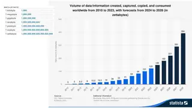
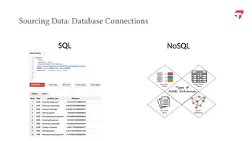
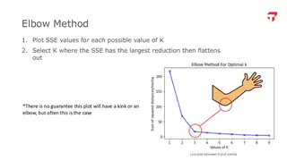
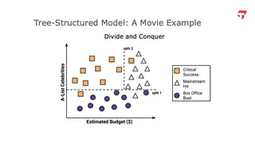
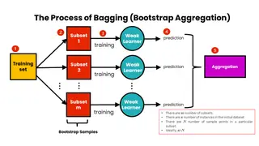
Data Mining
Finding structure in messy business data, then deciding whether to trust it.
course page Data VizMBA · Tepper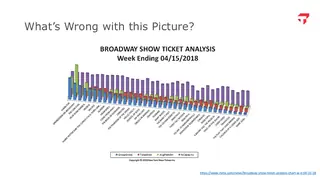
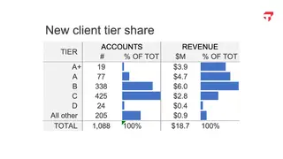
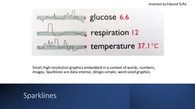
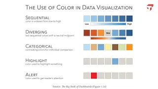
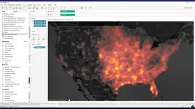
Data Visualization
Charts and dashboards designed to change a decision.
course page Explore & VizMS in Business Analytics · Tepper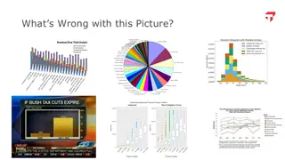
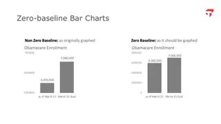
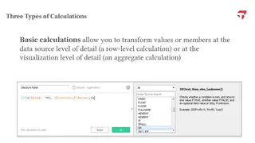
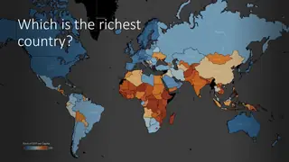
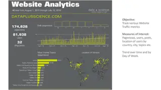
Data Exploration and Visualization
The MS in Business Analytics program's Tableau course: chart design, data stories, dashboards, and visualization for machine learning.
course page Prob & StatsMS in Business Analytics · Tepper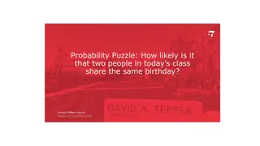
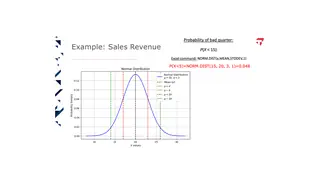
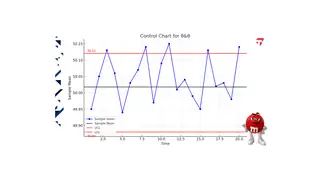
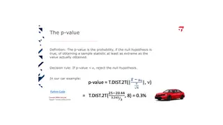
Introduction to Probability and Statistics
Probability and inference taught twice over, in Excel and in Python, through business decisions.
course page ML in BusinessMS in Business Analytics · Tepper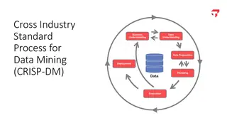
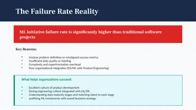
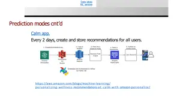
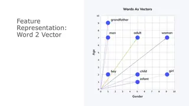
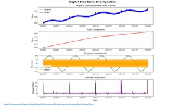
Machine Learning for Business Applications
Taking a model out of the notebook and into a working business system on AWS.
course page ML FoundationsPublic Policy & Management · Heinz College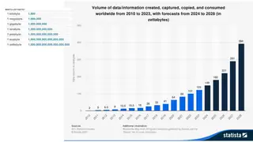
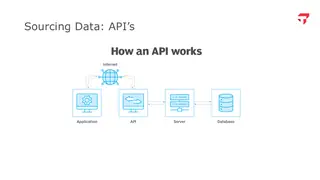
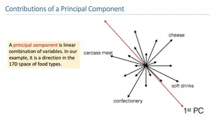
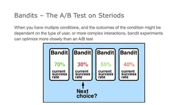
Machine Learning Foundations with Python
Machine learning in Python for students headed into policy and management work.
course pageFor organizations
Executive and custom education
From 2012 to 2016 I co-directed executive and continuing education at Carnegie Mellon University in Qatar and taught its open-enrollment programs: three-day courses for managers from government ministries, energy, banking, telecom, aviation, and media, with up to 114 people in the room. Participants came from organizations including Qatar Airways, Ooredoo, RasGas, Qatar Central Bank, the Qatar Investment Authority, Al Jazeera, and Vodafone Qatar. I still build programs for a single organization, most recently half-day workshops for Qatar's Civil Service Bureau in 2025. They all follow the same pattern: a live simulation first, then the research that explains what just happened, then a plan people take back to work.
- 114participants in a single three-day program
- 284participants across the three programs with full rosters
- 25organizations sent people, across ten sectors
- 4open-enrollment programs, plus custom workshops
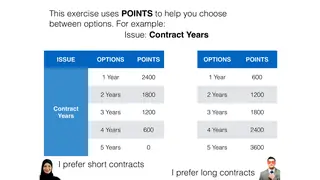
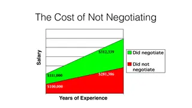
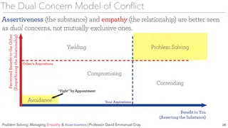
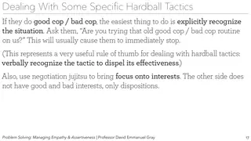
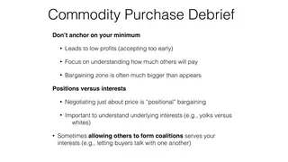
Business Negotiation and Conflict Resolution
Three mornings of live negotiation simulations, each followed by a debrief and a short lecture
course page Executive Education (open enrollment)Executive Education (open enrollment) · CMU Qatar


Decision Making in Groups and Organizations
Make a group decision under pressure, then find out what your process missed
course page Executive Education (open enrollment)Executive Education (open enrollment) · CMU Qatar
Managing Groups and Teams
Team simulations, a global team case, and the research on why groups underperform
course page Executive Education (open enrollment)Executive Education (open enrollment) · CMU QatarDynamic Organizational Leadership
How organizations build leaders, and how leaders build teams that speak up
course page Custom executive educationCustom executive education · CMU Qatar and TepperCustom Workshops and Programs
Workshops built for one organization's audience, from an energy company to a university's senior staff to a government bureau
course pageEarlier teaching
Organizational behavior at CMU Qatar, 2012 to 2016
My first appointment at Carnegie Mellon was as Assistant Teaching Professor of Organizational Behavior at the Qatar campus, where I also co-directed executive and continuing education. These are the undergraduate courses I taught there, each with its full schedule and slides.
Organizational Behavior
Motivation, teams, decisions, negotiation, leadership, and change, taught through Harvard cases and simulations.
course page NegotiationUndergraduate · CMU QatarNegotiation and Conflict Resolution
A negotiation every week, a debrief every week, and a real negotiation of your own at the end.
course page CulturesUndergraduate · CMU Qatar and PittsburghManaging Across Cultures
How culture shapes management, taught through cases from the Gulf, China, India, the Americas, Europe, and Africa.
course page ConsultingUndergraduate · CMU QatarBusiness Technology Consulting
How consultants think, how they interview, and how technology projects get built and managed.
course page Social MediaUndergraduate · CMU QatarDigital Marketing and Social Media Strategy
Search, social, and the digital marketing mix, taught through cases and real clients.
course page ResearchUndergraduate · CMU QatarEmpirical Research Methods
Ask a question about people, design a survey, collect the data, and test it with regression.
course page